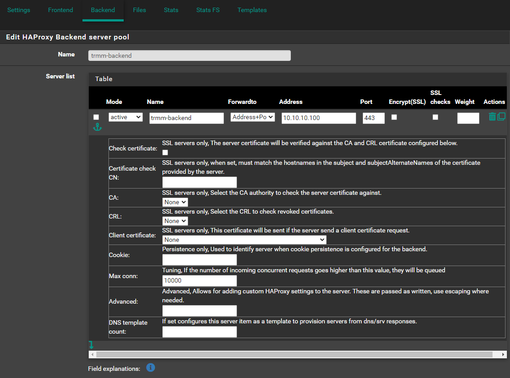
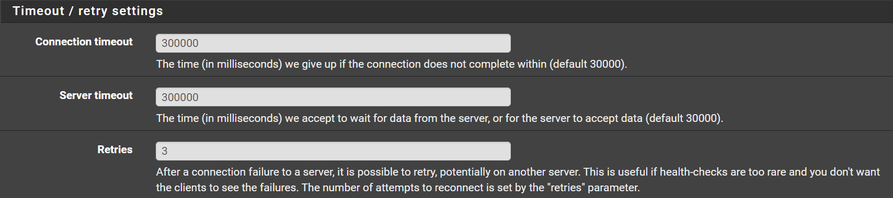
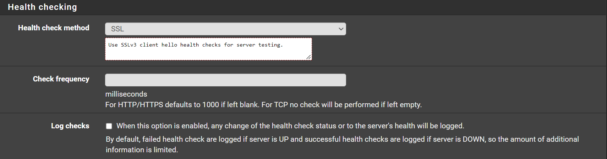
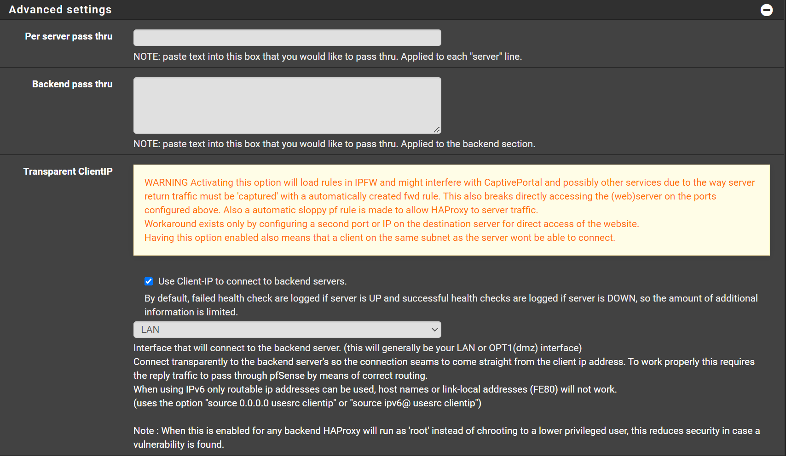
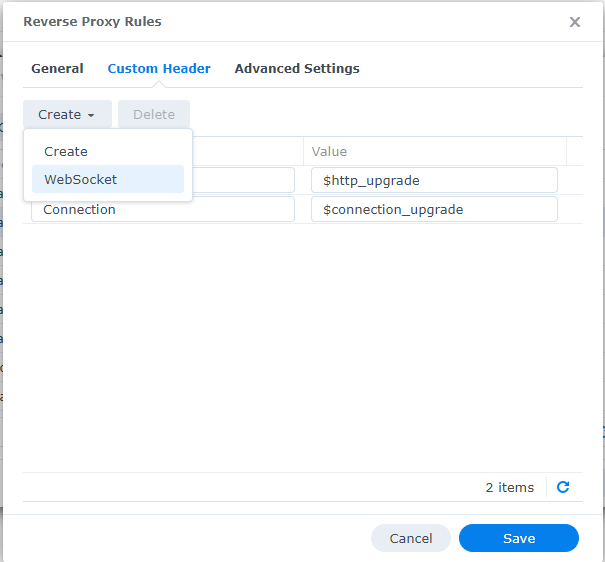

Unsupported Proxies¶
Note
Using Proxies/reverse proxies with Tactical RMM is not a supported configuration, the information below is provided here for your reference.
Although these aren't officially supported configurations, we generally will help point you in the right direction. Please use the Discord #unsupported channel to discuss issues related to these complex installations.
Danger
The install script sets up Nginx for you as a reverse proxy and does TLS and handles routing all requests to the correct backends, so using another proxy in front of your instance is probably not necessary (and may break things).
If you must use another reverse proxy for whatever reason, such as HAProxy or Nginx Proxy Manager, then you may need to edit the install script and disable all the steps relating to installing and configuring Nginx, and setup proxying manually.
General Notes on Proxies and Tactical RMM¶
Port 443¶
Make sure websockets option is enabled.
All 3 URL's will need to be configured: rmm, api, mesh
For mesh see the Section 10. TLS Offloading of the MeshCentral 2 User Guide.
Traefikv2¶
Offsite Resource: https://gitlab.com/NiceGuyIT/tactical-goodies/-/tree/main/traefik
This section will assume that by default Traefik will reverse proxy everything on port 443.
Here is a basic Traefik config with docker-compose. Note, the file.directory and file.watch are important:
version: "3.7"
services:
traefik:
container_name: traefik24
image: traefik:v2.4
restart: unless-stopped
command:
- --entryPoints.http.address=:80
- --entryPoints.https.address=:443
- --providers.docker=true
- --providers.docker.endpoint=unix:///var/run/docker.sock
- --providers.docker.defaultrule=HostHeader(`{{ index .Labels "com.docker.compose.service" }}.$DOMAINNAME`)
## This is important, to load the config for RMM and Mesh
- --providers.file.directory=rules # Load dynamic configuration from one or more .toml or .yml files in a directory.
- --providers.file.watch=true # Only works on top level files in the rules folder
####
- --certificatesresolvers.dns-cloudflare.acme.dnschallenge=true
- --certificatesResolvers.dns-cloudflare.acme.email=$CLOUDFLARE_EMAIL
- --certificatesResolvers.dns-cloudflare.acme.storage=/acme.json
- --certificatesResolvers.dns-cloudflare.acme.dnsChallenge.provider=cloudflare
- --certificatesResolvers.dns-cloudflare.acme.dnsChallenge.resolvers=1.1.1.1:53,1.0.0.1:53
ports:
- target: 80
published: 80
protocol: tcp
mode: host
- target: 443
published: 443
protocol: tcp
mode: host
volumes:
##The rules that we will load##
- $USERDIR/docker/traefik2/rules:/rules
##
- /var/run/docker.sock:/var/run/docker.sock:ro
- $USERDIR/docker/traefik2/acme/acme.json:/acme.json
- $USERDIR/docker/traefik2/traefik.log:/traefik.log
environment:
- CF_API_EMAIL=$CLOUDFLARE_EMAIL
- CF_API_KEY=$CLOUDFLARE_API_KEY
labels:
- "traefik.enable=true"
# HTTP-to-HTTPS Redirect
- "traefik.http.routers.http-catchall.entrypoints=http"
- "traefik.http.routers.http-catchall.rule=HostRegexp(`{host:.+}`)"
- "traefik.http.routers.http-catchall.middlewares=redirect-to-https"
- "traefik.http.middlewares.redirect-to-https.redirectscheme.scheme=https"
# HTTP Routers
- "traefik.http.routers.traefik-rtr.entrypoints=https"
- "traefik.http.routers.traefik-rtr.rule=HostHeader(`traefik.$DOMAINNAME`)"
- "traefik.http.routers.traefik-rtr.tls=true"
- "traefik.http.routers.traefik-rtr.tls.domains[0].main=$DOMAINNAME"
- "traefik.http.routers.traefik-rtr.tls.domains[0].sans=*.$DOMAINNAME"
Before proceeding, we need to change the port 443 to 4443 and 80 to 8080 because the port 443 and 80 are already used by Traefik.
Here is a snippet of the only thing you should modify into docker-compose file of the installation:
# container for tactical reverse proxy
tactical-nginx:
container_name: trmm-nginx
image: ${IMAGE_REPO}tactical-nginx:${VERSION}
restart: always
environment:
APP_HOST: ${APP_HOST}
API_HOST: ${API_HOST}
MESH_HOST: ${MESH_HOST}
CERT_PUB_KEY: ${CERT_PUB_KEY}
CERT_PRIV_KEY: ${CERT_PRIV_KEY}
networks:
proxy:
ipv4_address: 172.20.0.20
ports:
- "8080:8080" ## port 8080 instead of 80
- "4443:4443" ## port 4443 instead of 443
Once saved, make sure you run the docker-compose or installation script at least once, so all the directory structures are created. Once you have your certificate (acme.json) generated by traefikv2 we will be able to extract it for rmm.
Copy the acme.json create by traefik into the root of your rmm directory (In my case it's $USERDIR/docker/rmm) which you should have already defined. After that we can run this docker to extract the certificates for us:
version: "3.7"
services:
##Copy the acme.json of Traefik2 at volumes: (userdir/docker/rmm in this case)
traefik-certs-dumper:
image: ldez/traefik-certs-dumper:v2.7.4
entrypoint: sh -c '
apk add jq
; while ! [ -e /data/acme.json ]
|| ! [ `jq ".[] | .Certificates | length" /data/acme.json` != 0 ]; do
sleep 1
; done
&& traefik-certs-dumper file --version v2 --watch
--source /data/acme.json --dest data/certs'
volumes:
- $USERDIR/docker/rmm:/data
Once completed, you should have 1 new folder in your rmm directory $USERDIR/docker/rmm/certs in this example. As the installation instruction, we will pass those to the .env:
echo "CERT_PUB_KEY=$(sudo base64 -w 0 $USERDIR/docker/rmm/certs/certs/**yourdomain.com.crt**)" >> .env
echo "CERT_PRIV_KEY=$(sudo base64 -w 0 $USERDIR/docker/rmm/certs/private/**yourdomain.com.key**)" >> .env
Next we can create 3 rules to tell Traefik to correctly route the https and agent. For that we will create 2 rules into Traefik directory as per it's configuration. folder/traefik/rules
create:
nano app-mesh.toml
and inside it we add:
[http.routers]
[http.routers.mesh-rtr]
entryPoints = ["https"]
rule = "Host(`mesh.**yourdomain.com**`)"
service = "mesh-svc"
##middleware with 2fa
[http.services]
[http.services.mesh-svc]
[http.services.mesh-svc.loadBalancer]
passHostHeader = true
[[http.services.mesh-svc.loadBalancer.servers]]
url = "https://**xxx.xxx.xxx.xxx**:4443" # or whatever your external host's IP is
create:
nano app-meshagent.toml
[http.routers]
[http.routers.mesh-rtr1]
entryPoints = ["https"]
rule = """Host(`mesh.**yourdomain.com**`) &&
PathPrefix( `/agent.ashx`, `/meshrelay.ashx`, ) &&
Headers(`X-Forwarded-Proto`, `wss`) """
##Don't add middle where, the agent wont work.
[http.services]
[http.services.mesh-svc1]
[http.services.mesh-svc.loadBalancer]
passHostHeader = true
[[http.services.mesh-svc1.loadBalancer.servers]]
url = "https://**xxx.xxx.xxx.xxx**:4443" # or whatever your external host's IP is
create:
nano app-rmm.toml
and inside it we add:
[http.routers]
[http.routers.rmm-rtr]
entryPoints = ["https"]
rule = "Host(`rmm.**yourdomain.com**`)"
service = "rmm-svc"
##middleware with 2fa
[http.services]
[http.services.rmm-svc]
[http.services.rmm-svc.loadBalancer]
passHostHeader = true
[[http.services.rmm-svc.loadBalancer.servers]]
url = "https://xxx.xxx.xxx.xxx:4443" # or whatever your external host's IP:port is
That's it, you can now restart Tactical. rmm and mesh.yourdomain.com should work, same for the agent. Please note that if you have a middleware with 2FA you can still use it with the inside mesh.toml, but do not add it with the agent.
HAProxy¶
Check / change the MeshCentral config.json, some of the values may be set already. CertUrl must be changed to point to the HAProxy server if not using the same certs for both HAProxy and TRMM.
MeshCentral Adjustment¶
Credit to @bradhawkins
Edit MeshCentral config:
nano /meshcentral/meshcentral-data/config.json
Insert this (modify HAProxyIP to your network):
{
"settings": {
"Port": 4443,
"AliasPort": 443,
"RedirPort": 8080,
"TlsOffload": "127.0.0.1",
},
"domains": {
"": {
"CertUrl": "https://HAProxyIP:443/",
}
}
}
Restart MeshCentral:
systemctl meshcentral restart
HAProxy Config¶
The order of use_backend is important, and Tactical-Mesh-WebSocket_ipvANY must be before Tactical-Mesh_ipvANY.
This assumes a standard VM install or Docker instance, unaltered.
If you've altered exposed ports on your VM or Docker instance, those will need to be adjusted in the configuration.
The values of timeout connect, timeout server, and timeout tunnel have been configured to maintain a stable agent connection, however you may need to adjust these values to suit your environment:
frontend http-to-https-shared
bind 0.0.0.0:80
mode http
log global
option socket-stats
option http-server-close
option dontlognull
option forwardfor
acl https ssl_fc
http-request set-header X-Forwarded-Proto http if !https
http-request set-header X-Forwarded-Proto https if https
http-request add-header X-Real-IP %[src]
timeout client 30000
acl rmm var(txn.txnhost) -m str -i rmm.example.com
acl api var(txn.txnhost) -m str -i api.example.com
acl mesh var(txn.txnhost) -m str -i mesh.example.com
http-request set-var(txn.txnhost) hdr(host)
http-request redirect scheme https if rmm
http-request redirect scheme https if api
http-request redirect scheme https if mesh
frontend https-shared
bind 0.0.0.0:443 ssl crt-list /var/etc/haproxy/HTTPS.crt_list #ADJUST THIS TO YOUR OWN SSL CERTIFICATES
mode http
log global
option socket-stats
option dontlognull
option http-server-close
option forwardfor
acl https ssl_fc
http-request set-header X-Forwarded-Proto http if !https
http-request set-header X-Forwarded-Proto https if https
timeout client 30000
acl aclcrt_https_shared var(txn.txnhost) -m reg -i ^([^\.]*)\.example\.com(:([0-9]){1,5})?$
acl rmm var(txn.txnhost) -m str -i rmm.example.com
acl nats-websocket var(txn.txnpath) -m sub -i /natsws
acl api var(txn.txnhost) -m str -i api.example.com
acl is_websocket hdr(Upgrade) -i WebSocket
acl mesh var(txn.txnhost) -m str -i mesh.example.com
acl api-ws var(txn.txnhost) -m sub -i api.example.com
http-request set-var(txn.txnhost) hdr(host)
http-request set-var(txn.txnpath) path
use_backend rmm.example.com_ipvANY if rmm
use_backend rmm.example.com-websocket_ipvANY if nats-websocket api-ws
use_backend rmm.example.com_ipvANY if api
use_backend mesh.example.com-websocket_ipvANY if is_websocket mesh
use_backend mesh.example.com_ipvANY if mesh
backend rmm.example.com_ipvANY
mode http
log global
timeout connect 30000
timeout server 30000
retries 3
http-request add-header X-Forwarded-Host %[req.hdr(Host)]
http-request add-header X-Forwarded-Proto https
server rmm x.x.x.x:443 ssl verify none
backend rmm.example.com-websocket_ipvANY
mode http
log global
timeout connect 30000
timeout server 30000
retries 3
timeout tunnel 3600000
http-request add-header X-Forwarded-Host %[req.hdr(Host)]
http-request add-header X-Forwarded-Proto https
server rmm-websocket x.x.x.x:443 ssl verify none
backend mesh.example.com-websocket_ipvANY
mode http
log global
timeout connect 3000
timeout server 3000
retries 3
timeout tunnel 3600000
http-request add-header X-Forwarded-Host %[req.hdr(Host)]
http-request add-header X-Forwarded-Proto https
server mesh-websocket x.x.x.x:443 ssl verify none
backend mesh.example.com_ipvANY
mode http
log global
timeout connect 15000
timeout server 15000
retries 3
timeout tunnel 15000
http-request add-header X-Forwarded-Host %[req.hdr(Host)]
http-request add-header X-Forwarded-Proto https
server mesh x.x.x.x:443 ssl verify none
HAProxy How-to for PFSense¶
https://github.com/ninjamonkey198206/T-RMM-PFSense-HAProxy-config
HAProxy How-to for Baremetal¶
https://github.com/ninjamonkey198206/T-RMM-Baremetal-HAProxy
HAProxy in TCP Mode, PFSense¶
In this scenario, you install TRMM as per documentation.
Meaning your certificates are generated and managed on your TRMM server, just use the install.sh and follow docs and on-screen instructions.
HAProxy here will just pass the traffic to the NGINX on TRMM server. No certificate management. Only use this method if you have more than 1 server that need to use port 443 on the same public IP.
Assumptions¶
These are some assumptions made to make this guide, short, easy to follow and to the point. Of course you can adapt it to your environment and/or current configuration.
- You have a PFSense firewall.
- You have HAProxy installed.
- You don't have any
httpfrontends on your HAProxy. - You have firewall rule to allow traffic from your WAN to HAProxy 443 port.
- You have set Max Connections on Settings to a value MORE than the agents you plan to connect.
- Your subdomains are:
api,mesh,rmm - You can resolve
(rmm|api|mesh).example.comto your local TRMM server when in your local network. - You can resolve
(rmm|api|mesh).example.comto your public IP when you are outside of your local network.
Global Settings¶
Config file format, for reference:
global
maxconn 50000
stats socket /tmp/haproxy.socket level admin expose-fd listeners
gid 80
nbproc 1
nbthread 1
hard-stop-after 15m
chroot /tmp/haproxy_chroot
daemon
tune.ssl.default-dh-param 2048
server-state-file /tmp/haproxy_server_state
Values you will have to replace with your own¶
- 10.10.10.100 - Change with your TRMM local IP.
- example.com - Change with your domain.
Backend¶
Navigate to Services -> HAProxy -> Backend
- Click Add
Backend server pool¶
- Name:
trmm-backend - On Server list, Click
- Name:
trmm-server - Forwardto:
Address+Port - Address:
10.10.10.100(Reminder: change this) - Port:
443 - Max conn:
10000(Or0for unlimited)

Timeout / retry settings¶
- Connection timeout:
300000(Note: it has more 0s than the default) - Server timeout:
300000(Note: it has more 0s than the default) - Retries:
3

Health checking¶
- Health check method:
SSL
Keep this to
nonewhile installing or updating certificates. There might be problems if it's set toSSLorbasicwhile doing so.

Advanced settings¶
Please read the warning there, and the note at the bottom. This optional and it's use is to show the real public IP of the agent.
- Check `Use Client-IP to connect to backend servers.
Some remote agents would not let me do RDP without this option. Play with it and see what works for you.

It works well for me, there are cases that it might not work on all environments.
For those who like the config files¶
backend trmm-backend_ipv4
mode tcp
log global
timeout connect 300000
timeout server 300000
retries 3
source ipv4@ usesrc clientip
option ssl-hello-chk
server trmm-server 10.10.10.100:443 check inter 1000 maxconn 10000
Frontend¶
Navigate to Services -> HAProxy -> Frontend
- Click Add
Edit HAProxy Frontend¶
- Name:
FrontendTCP - Status:
Active - On External address, click
- Listen address:
WAN address (IPv4) - Port:
443 - Max connections:
10000(Or0or unlimited`) - Type:
ssl/https (TCP mode)

Default backend, access control lists and actions¶
- On Access Control lists, Click
- Name:
tactical - Expression
Server Name Indication TLS extension regex: - value:
(rmm|api|mesh)\.example\.com - On Actions, Click
- Action:
Use Backend - Condition acl names:
tactical - backend:
trmm-backend

Advanced settings¶
- Client timeout:
300000(Note: it has more 0s than the default) - Use "httpclose" option:
http-server-close

Click Save Click Apply Changes
For those who like the config files¶
frontend Frontend-SNI
bind YOURWANIP:443 name YOURWANIP:443
mode tcp
log global
maxconn 10000
timeout client 300000
tcp-request inspect-delay 5s
acl tactical req.ssl_sni -m reg -i (rmm|mesh|api)\.yourdomain\.com
tcp-request content accept if { req.ssl_hello_type 1 }
use_backend tactical_ipv4 if trmm-backend
Apache Proxy¶
HowTo - Proxy on Apache
TRMM SERVER¶
Edit file /etc/nginx/sites-available/rmm.conf Add the lines from 'real_ip' module inside server tag:
set_real_ip_from 192.168.0.200; #IP Address of your apache proxy
real_ip_header X-Forwarded-For;
Restart nginx:
systemctl restart nginx.service
APACHE¶
Enable ssl proxy and rewriteEngine. Set proxy to preserve host. Set upgrade rule to websocket. Set proxypass rules redirecting to rmm location.
Apache ssl config example:
<VirtualHost *:443>
ServerName rmm.blablabla.com.br:443
ServerAlias mesh.blablabla.com.br:443 api.blablabla.com.br:443
SSLEngine on
SSLCertificateFile "C:/Apache24/conf/ssl-rmm.blablabla.com.br/_.blablabla.com.br-chain.pem"
SSLCertificateKeyFile "C:/Apache24/conf/ssl-rmm.blablabla.com.br/_.blablabla.com.br-key.pem"
SSLProxyEngine on
RewriteEngine On
ProxyPreserveHost On
# When Upgrade:websocket header is present, redirect to ws
# Using NC flag (case-insensitive) as some browsers will pass Websocket
RewriteCond %{HTTP:Upgrade} =websocket [NC]
RewriteRule ^/(.*) wss://192.168.0.212/$1 [P,L]
ProxyPass "/" "https://192.168.0..212/" retry=3
ProxyPassReverse "/" "https://192.168.0.212/" retry=3
BrowserMatch "MSIE [2-5]" \
nokeepalive ssl-unclean-shutdown \
downgrade-1.0 force-response-1.0
</VirtualHost>
Updating Certificate:¶
In my case, auto DNS Challenge from Apache, so every time we get new cert files, it must be copied inside rmm too. Just overwrite default location:
/etc/letsencrypt/archive/blablablabla
Nginx Proxy¶
Having mesh connection issues?
See https://info.meshcentral.com/downloads/MeshCentral2/MeshCentral2UserGuide.pdf page 30.
Nginx Proxy Manager¶
In NPM, declare the hosts with the parameters:
api.{domain}
https | TRMM server IP | 443
ON: Cache Assets | Block Common Exploits | Websockets Support
mesh.{domain}
https | TRMM server IP | 443
ON: Cache Assets | Block Common Exploits | Websockets Support
rmm.{domain}
https | TRMM server IP | 443
ON: Cache Assets | Block Common Exploits | Websockets Support
proxy.{domain}
http | NPM server IP | 81 (NPM web UI port)
Then connect in SSH to your TRMM server to modify the Nginx config of Mesh:
nano meshcentral/meshcentral-data/config.json
Then modify in this file the TlsOffload field to put the local IP address of your NPM and the port that goes with it, then also modify the "CertUrl" field to put the public domain name of your NPM.
{
"settings": {
"Cert": "${meshdomain}",
"MongoDb": "mongodb://127.0.0.1:27017",
"MongoDbName": "meshcentral",
"WANonly": true,
"Minify": 1,
"Port": 4430,
"AliasPort": 443,
"RedirPort": 800,
"AllowLoginToken": true,
"AllowFraming": true,
"_AgentPing": 60,
"AgentPong": 300,
"AllowHighQualityDesktop": true,
"TlsOffload": "{NPM LAN IP}:81",
"agentCoreDump": false,
"Compression": true,
"WsCompression": true,
"AgentWsCompression": true,
"MaxInvalidLogin": { "time": 5, "count": 5, "coolofftime": 30 }
},
"domains": {
"": {
"Title": "Tactical RMM",
"Title2": "Tactical RMM",
"NewAccounts": false,
"CertUrl": "https://proxy.{domain}:443/",
"GeoLocation": true,
"CookieIpCheck": false,
"mstsc": true
}
}
}
Then restart your Mesh:
systemctl restart meshcentral.service
At which point agents should be working. Use the "Recover Connection" button if necessary.
Synology NAS Reverse Proxy Portal¶
Follow HAProxy
And set the "CertUrl" to point to the IP address of my NAS that was running the reserve proxy and had the certificates installed.
In Synology NAS reverse proxy portal and added websockets to the rmm domains, especially the mesh domain under custom headers, by just clicking the create button and choosing WebSocket:

